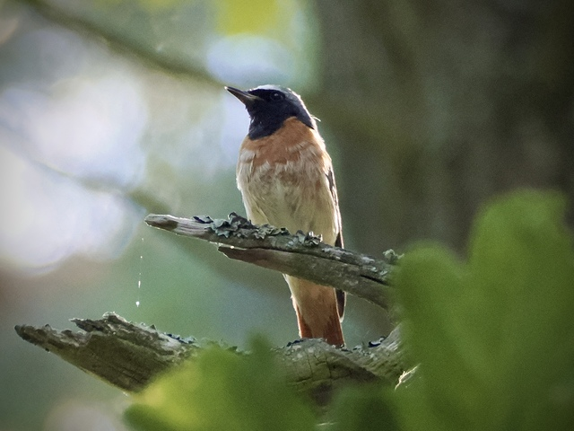
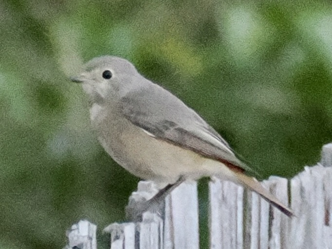

Common Redstart
Phoenicurus phoenicurus
Order: Passeriformes
Family: Muscicapidae

A slender small bird. Male has a silvery crown, wings, and back, black face and orange-red belly and tail. One might ask why it seems to have more of a red end than a red start. In fact, start comes from Old English steort which means tail.

Female lacks the patterning of the male, but retains a red tail.